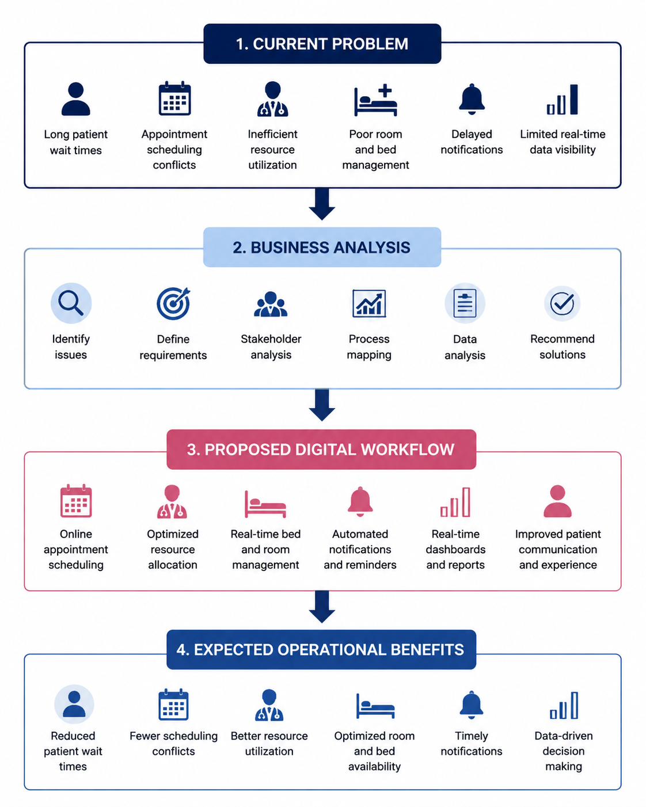

Need simple scheduling, timely updates, and clearer expectations about delays.
← Back to featured projects
Business Analysis · Healthcare Operations
Hospital Wait-Time Improvement
A healthcare business analysis case study proposing an automated scheduling, resource-tracking, and notification workflow designed to improve operational visibility and support a target reduction in patient wait times.

01 · Overview
Improving the patient scheduling experience
This case study examines how fragmented scheduling, limited resource visibility, and delayed communication can contribute to longer patient wait times in a hospital environment.
The project translates the operational challenge into documented business requirements, process models, traceable solution features, risks, and a proposed reporting framework.
02 · Business problem
The challenge
Patients may experience delays when appointment scheduling, provider availability, room status, and operational updates are managed through disconnected or manual processes.
Hospital staff also need a reliable way to understand current appointment demand, resource availability, scheduling conflicts, and wait-time performance.
Questions explored
- Where do delays occur in the current scheduling process?
- Which stakeholders need real-time appointment and resource information?
- What requirements are necessary for automated scheduling and notifications?
- Which KPIs should be monitored to evaluate wait-time performance?
- How can requirements be traced through design, testing, and delivery?
03 · Objective and scope
Project objective
The project proposed a digital workflow targeting a 20% reduction in patient wait time through automated scheduling, resource tracking, and timely notifications.
Note: This was a proposed target for the case study. The solution was not implemented in a live hospital, so the project does not describe target as an achieved result.
In scope
- Appointment scheduling and rescheduling
- Provider, room, and resource availability tracking
- Patient and staff notifications
- Wait-time and scheduling KPI reporting
- Requirements, process, risk, and testing documentation
Out of scope
- Hospital construction or physical expansion
- Recruitment of additional clinical staff
- Replacement of the full electronic health record
- Clinical diagnosis or treatment decisions
04 · My role
What I contributed
- Defined the business problem, objective, scope, and success measures.
- Identified primary and secondary stakeholders.
- Documented business, functional, and non-functional requirements.
- Created current-state and future-state process workflows.
- Prepared user stories and acceptance criteria.
- Developed a Requirements Traceability Matrix.
- Prepared a stakeholder matrix, risk register, SWOT, and WBS.
- Proposed wait-time, scheduling, feedback, and resource KPIs.
- Organized findings into a stakeholder-focused presentation.
05 · Stakeholders
Who the solution supports
Need visibility into schedules, patient flow, rooms, and available resources.
Need KPIs for wait times, utilization, cancellations, and operational bottlenecks.
Need secure integration, system reliability, access controls, and support procedures.
06 · Requirements
Key solution requirements
Business requirements
- Improve the visibility of appointment and resource status.
- Reduce avoidable scheduling conflicts and manual coordination.
- Provide timely communication to patients and hospital staff.
- Measure patient wait time and scheduling performance consistently.
Functional requirements
- Allow authorized users to create, update, cancel, and reschedule appointments.
- Display provider, room, and resource availability.
- Detect scheduling conflicts before confirmation.
- Send confirmations, reminders, delay notices, and rescheduling updates.
- Capture appointment, feedback, and resource-status data for reporting.
Non-functional requirements
- Protect patient information through role-based access and secure handling.
- Provide a clear and accessible user experience.
- Support reliable system performance during high-demand periods.
- Maintain auditability for schedule and status changes.
07 · Approach
Business analysis process
Defined the problem, stakeholders, pain points, assumptions, and project boundaries.
Reviewed the current process and identified scheduling, visibility, and communication gaps.
Documented requirements, user stories, acceptance criteria, and traceability.
Created a future-state workflow and proposed scheduling, resource, and notification features.
Defined UAT scenarios and success criteria linked to business and functional requirements.
Presented the proposed solution, risks, KPIs, and recommendations to stakeholders.
08 · Proposed solution
Automated scheduling and resource visibility
The proposed future-state solution combines appointment scheduling, resource availability, conflict detection, and status notifications in one coordinated workflow.
- Patients request or confirm available appointment times.
- The system verifies provider, room, and resource availability.
- Scheduling conflicts are flagged before an appointment is finalized.
- Patients and staff receive confirmations, reminders, and delay notifications.
- Operational data feeds a dashboard for wait-time and resource monitoring.

Future-state process showing how appointment requests, availability checks, confirmations, notifications, and operational reporting connect.
09 · Deliverables
Documentation produced
- Business Requirements Document
- Current-state and future-state process maps
- BPMN workflow
- Stakeholder matrix and communication strategy
- Business, functional, and non-functional requirements
- User stories and acceptance criteria
- Seven-column Requirements Traceability Matrix
- Risk register
- SWOT analysis
- Work Breakdown Structure
- UAT scenarios
- Dashboard and KPI plan
10 · Risks and constraints
Key implementation considerations
- Patient privacy and HIPAA-related data handling requirements
- Integration with existing scheduling and hospital systems
- Resistance to workflow changes among users
- Incomplete or inconsistent resource-status data
- Budget and implementation timeline constraints
- Notification failures or outdated contact information
- Need for staff training, support, and process ownership
11 · Expected impact
How success would be measured
Because this was a proposed solution, the project defined expected benefits and KPIs rather than claiming measured implementation results.
- Average patient wait time
- Percentage of appointments starting on time
- Cancellation and no-show rate
- Scheduling-conflict rate
- Provider and room utilization
- Notification delivery rate
- Patient satisfaction and feedback trends
The expected operational benefits include improved scheduling visibility, fewer avoidable conflicts, faster communication, and stronger decision support for hospital administrators.
12 · Reflection
What I learned
This project strengthened my ability to convert an operational healthcare problem into structured, testable, and traceable requirements.
It also improved my understanding of stakeholder communication, process modeling, scope control, healthcare privacy considerations, risk analysis, UAT planning, and the importance of distinguishing proposed outcomes from measured results.
Explore the supporting work
Add links to your presentation, BRD, BPMN diagram, RTM, dashboard, or GitHub repository after those materials are uploaded.